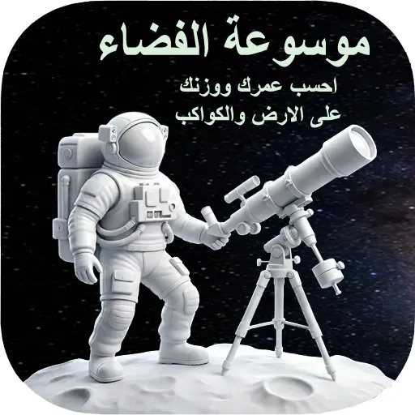

رحلتك الشخصية عبر النجوم، الكواكب، والمجرات.
حمل التطبيق الآنرصد المناخ المحلي وتأثيرات الغلاف الجوي لكل منطقة.
احسب بدقة وزنك وعمرك الحقيقي على مختلف كواكب النظام الشمسي.
حول وحداتك بدقة من الماخ إلى الجول وصولاً للسنة الضوئية.
تعلم علوم الفلك والنجوم من الصفر بأسلوب شيق وبسيط.